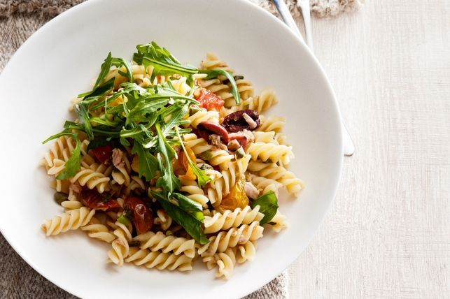

Tuna pasta

Description
For a fast and satisfying meal, turn to this fresh tomato and tuna pasta that you can whip up in under 30 minutes.
Ingredients
- 300g dried fusilli pasta
- 2 tsp extra virgin olive oil
- 4 spring onions (shallots), thinly sliced
- 40g (1/4 cup) pitted black kalamata olives, halved
- 1 tbsp baby capers, drained
- 1 drained anchovy fillet, finely chopped
- 400g punnet tomato medley mix, halved
- 1 tbsp red wine vinegar
- 2 x 95g cans tuna in olive oil, well drained
- 1/4 cup fresh basil leaves, torn
- 40g baby rocket leaves
Steps
- Cook the pasta in a large saucepan of salted boiling water until al dente. Drain. Return to the pan.
- Meanwhile, heat the oil in a non-stick frying pan over medium heat. Add the spring onion, olive, capers and anchovy. Cook, stirring, for 1 minute or until aromatic. Stir in the tomato for 2-3 minutes or until softened slightly. Remove from heat. Stir in the vinegar. Season with pepper.
- Add the tomato mixture, tuna and basil to the pasta. Toss gently to combine. Divide among bowls and top with rocket.